ETHEREALNEXUS
Components, without
the guesswork.
I redesigned a developer dashboard to make components easier to find, their status clearer and everyday updates easier to manage.
Explore the thinking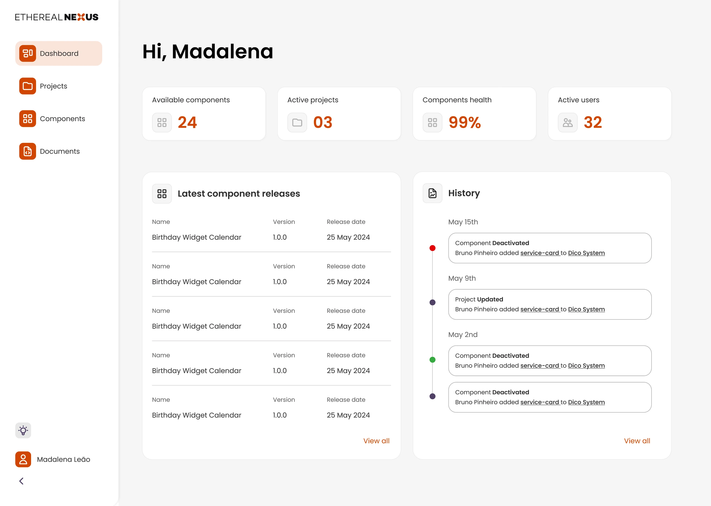
- MY ROLE
- Product Designer
- TIMELINE
- 6 months
- TOOLS
- Figma
- SECTOR
- Developer tools
- THE TEAM
- 1 PD · 1 FE · 1 BE · 1 PM
CONTEXT + PROBLEM
A useful tool.
A difficult workflow.
Finding a component was only the first hurdle. Understanding its state and knowing whether a change had saved were just as important.
Ethereal Nexus connects independently developed frontend components with content management systems. Its dashboard supports developers creating and maintaining those components.
The existing experience made routine tasks harder to navigate: long lists, unclear status labels and limited feedback during editing and saving.
Find it. Understand it.
Know what changed.
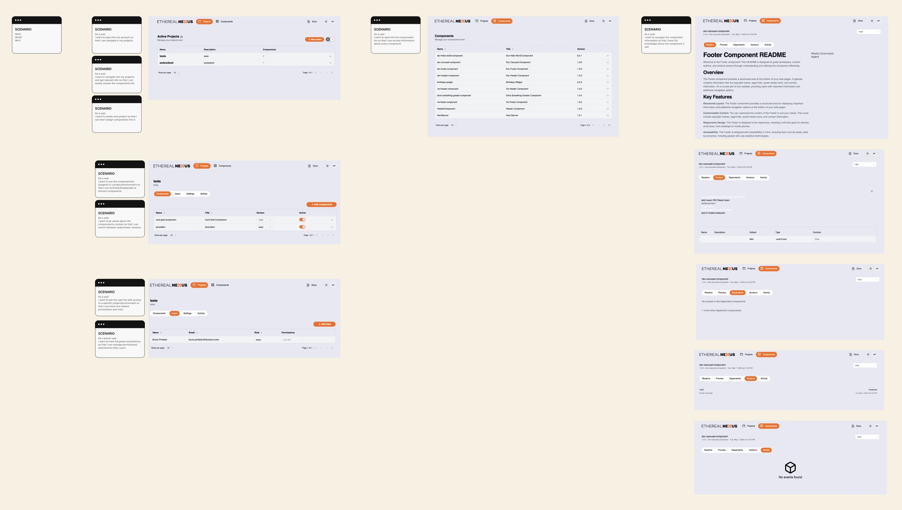
The original dashboard and component management flows.
RESEARCH + REFRAME
Everyday tasks.
Recurring friction.
I interviewed frontend developers and used realistic task scenarios to understand how they found, edited and managed components.
How Might We questions, a developer persona and a journey map turned the findings into a shared direction with the developers and product manager.
Findability
Locate components without scanning long lists.
Status clarity
Understand which components are live or staged.
Editing
Reduce friction in everyday updates.
Feedback
Make it clear when a change has been applied.
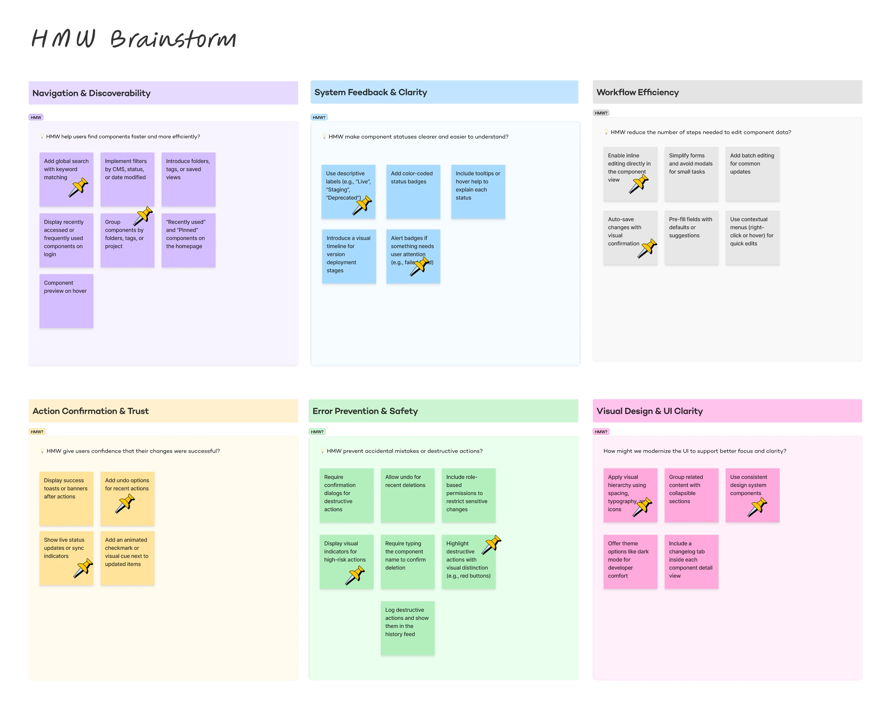
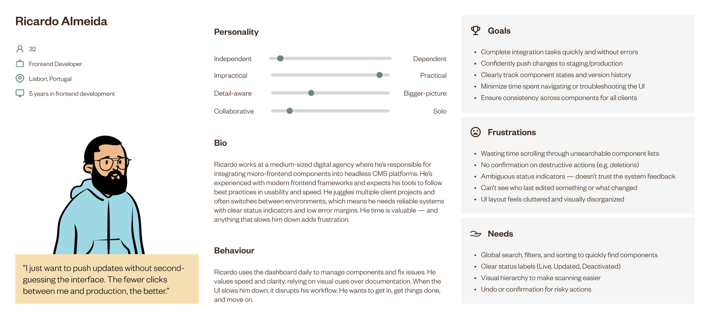
The direction: make components easier to find, their state clearer and updates easier to manage.
PRIORITISING + DESIGN
From friction
to a clearer system.
I worked with the team to weigh user value against implementation effort.
Wireframes explored the dashboard structure and key workflows before the work became a reusable UI library and a redesigned interface direction.
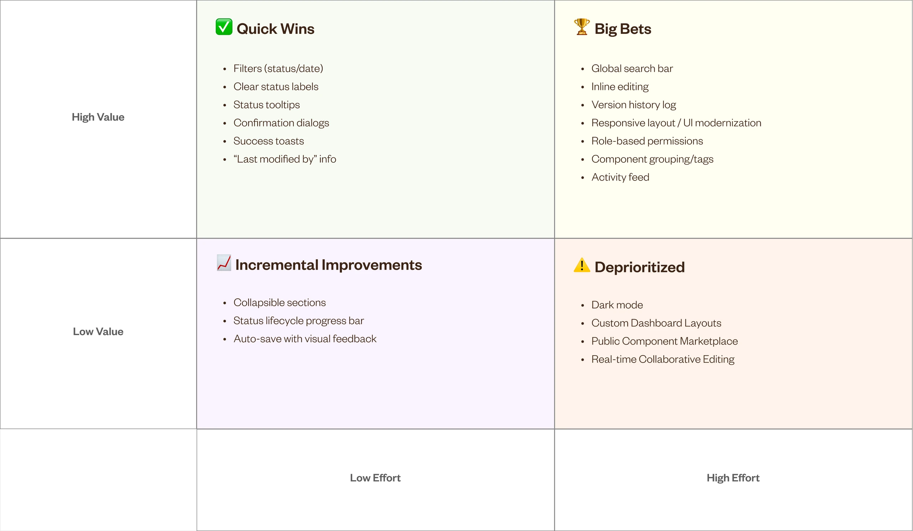
Prioritisation with the developers and product manager.
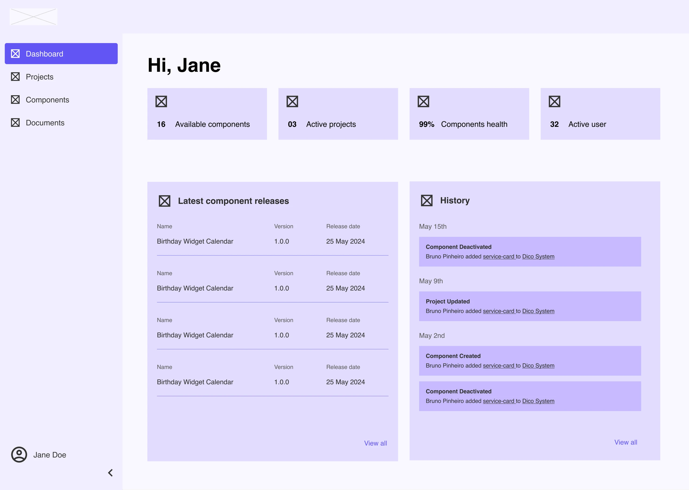
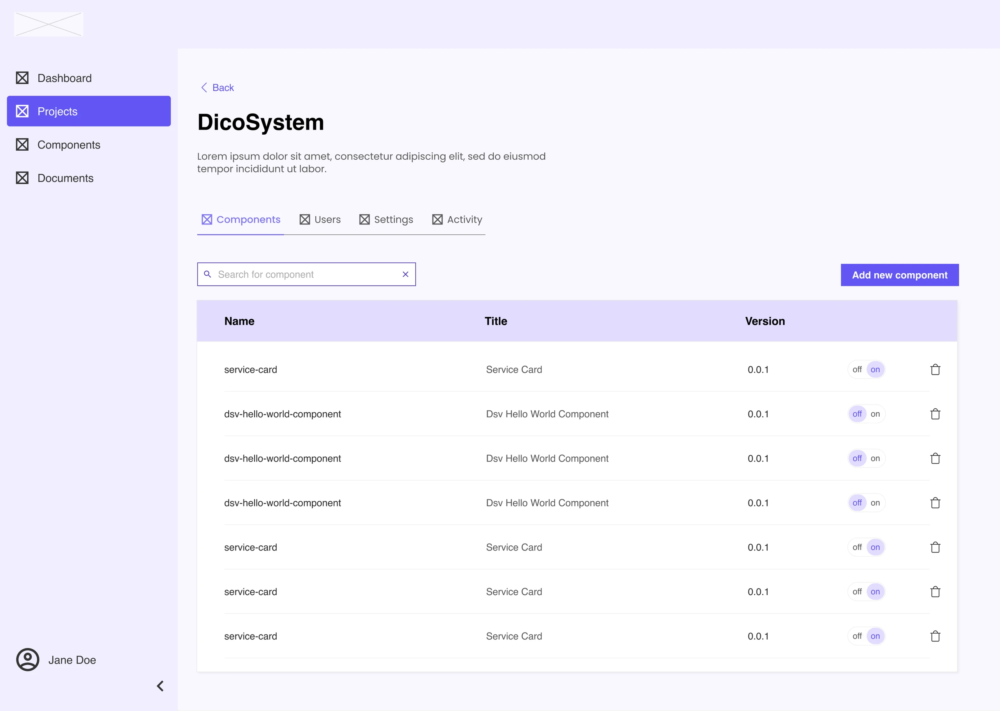
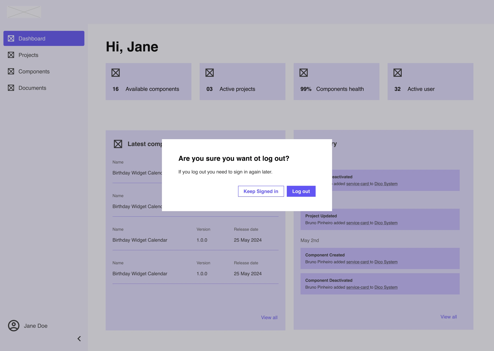
EXPLORE THE WORK · ENLARGE FOR DETAIL
Light dashboard with component health, releases and activity
A place to orient.
A structured overview brings component information and recent activity into one place.
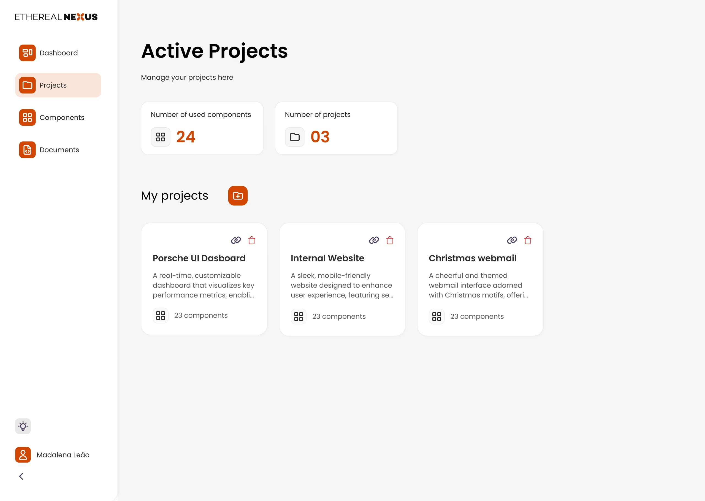
Light project overview with project cards and summary information
Find the right project.
The project overview groups work into a consistent set of cards, with summary information above.
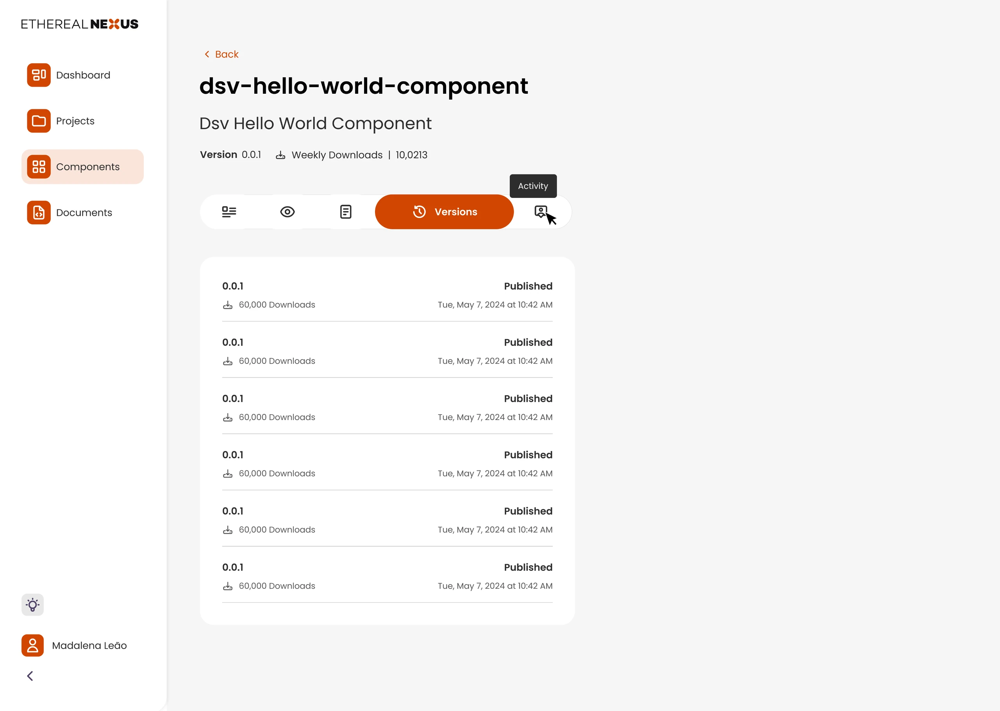
Component detail showing versions, live and staged states and actions
Make component state visible.
Versions, state labels and actions sit within the component detail rather than being left implicit.
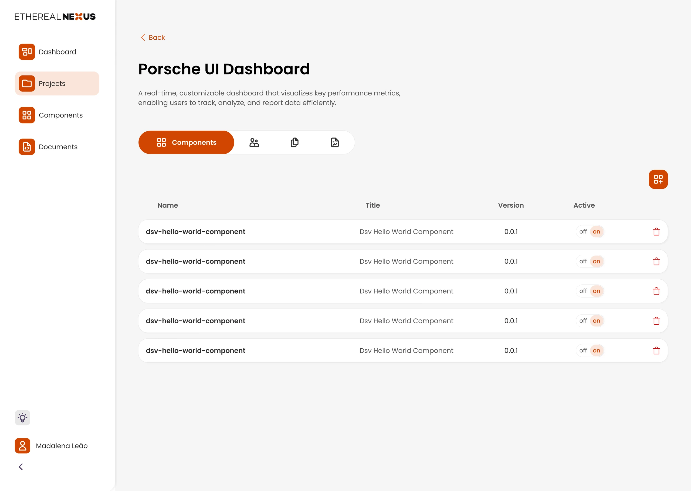
Project component table with versions and status indicators
Manage related components.
A project-level list connects the components, versions and states that belong to the same work.
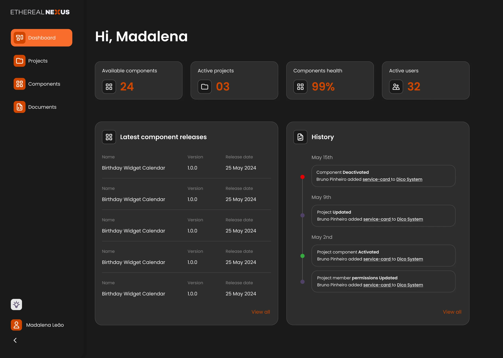
Dark dashboard with the same component summaries, releases and history
Keep the structure consistent.
The interface library carries the same hierarchy into a dark theme.
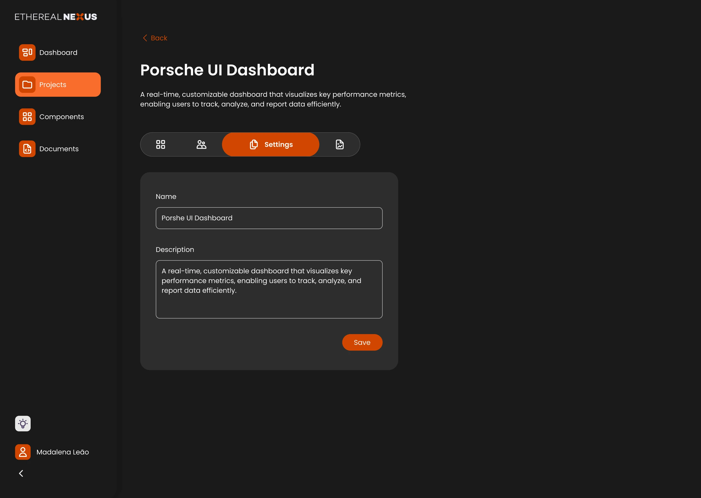
Dark project settings with a project description and save control
Support the editing flow.
The settings view makes editable information and its save action explicit.
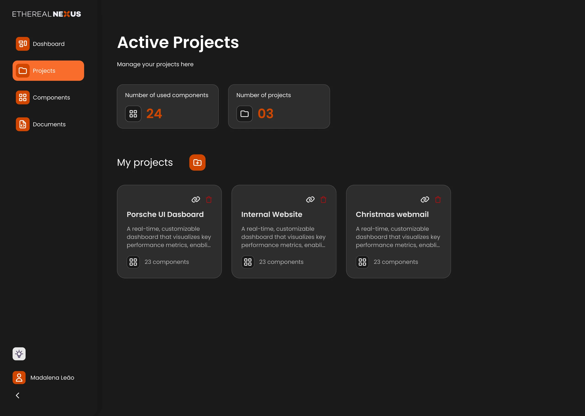
OUTCOME + REFLECTION
A clearer foundation.
A reusable language.
The project produced a redesigned dashboard direction and a reusable UI library, connecting research with information architecture, component views and editing flows.
Clearer discovery
Structured views and search controls support component discovery.
More visible states
Status information and confirmation patterns make system behaviour explicit.
Consistent foundations
Reusable components and documented states support design and development.


ONE CASE STUDY. PART OF A BIGGER PICTURE.